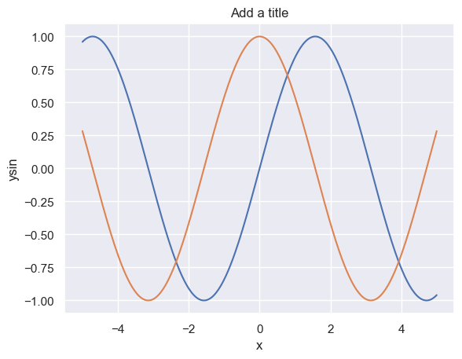

This notebook provides a brief introduction to the Seaborn visualization library.
Seaborn helps you explore and understand your data. Its plotting functions operate on dataframes and arrays containing whole datasets and internally perform the necessary semantic mapping and statistical aggregation to produce informative plots. Its dataset-oriented, declarative API lets you focus on what the different elements of your plots mean, rather than on the details of how to draw them.
Here’s an example of seaborne’s capabilities.
Code
%matplotlib inline# Import seabornimport seaborn as sns# Apply the default themesns.set_theme()# Load an example datasettips = sns.load_dataset("tips")# Create a visualizationsns.relplot( data=tips, x="total_bill", y="tip", col="time", hue="sex", style="smoker", size="size",)tips.head()
total_bill
tip
sex
smoker
day
time
size
0
16.99
1.01
Female
No
Sun
Dinner
2
1
10.34
1.66
Male
No
Sun
Dinner
3
2
21.01
3.50
Male
No
Sun
Dinner
3
3
23.68
3.31
Male
No
Sun
Dinner
2
4
24.59
3.61
Female
No
Sun
Dinner
4
Behind the scenes, seaborn uses matplotlib to draw its plots. The plot above shows the relationship between five variables in the built-in tips dataset using a single call to the seaborn function relplot().
Notice that you only need to provide the names of the variables and their roles in the plot.
This interface is different from matplotlib, in that you do not need to specify attributes of the plot elements in terms of the color values or marker codes.
Behind the scenes, seaborn handled the translation from values in the dataframe to arguments that matplotlib understands. This declarative approach lets you stay focused on the questions that you want to answer, rather than on the details of how to control matplotlib.
Seaborn relplot()
The function relplot() is named that way because it is designed to visualize many different statistical relationships. While scatter plots are often effective, relationships where one variable represents a measure of time are better represented by a line. The relplot() function has a convenient kind parameter that lets you easily switch to this alternate representation:
If you compare the two calls to relplot() in the two examples so far, you will see that the size and style parameters are used in both the scatter plots (first example) and line plots (second example). However, they affect the two visualizations differently.
In a scatter plot, the size and style arguments affect marker area and symbol representation.
In a line plot, the size and style arguments alter the line width and dashing.
Allowing the same arguments (syntax) to change meaning (semantics) across different contexts is more characteristic of natural languages than formal ones. In this case, seaborn is attempting to allow you to write in a “grammar of graphics”, which is the same concept underlying ggplot created by Hadley Wickham.
The benefit of adopting this less formal specification is that you do not need to worry about as many syntax details and instead can focus more on the overall structure of the plot and the information you want it to convey.
Comparing matplotlib to seaborn
A focus of today’s activities is translation, so let’s look at translating some of the examples from yesterday’s matplotlib exercise into seaborn.
First, as always, let’s import our important packages:
▶️ <b> Run the cell below. </b>
Code
# Importsimport numpy as npimport pandas as pdimport matplotlib.pyplot as pltimport seaborn as sns
Basic line plots (sns.lineplot)
Yesterday we used a few functions, y_{\sin} = \sin{(x)} and y_{\cos} = \cos{(x)}:
# Generate a 1D array with 300 points between -5 and 5x = np.linspace(-5,5,300)# Generate sine waveysin = np.sin(x)# Generate cosine waveycos = np.cos(x)# Now let's make a dataframe from these arrays:df = pd.DataFrame({'x': x,'ysin': ysin,'ycos': ycos })
We can plot these on the same figure without instancing plt.figure() as follows:
# Plot sine waveplt.plot(x,ysin)# Plot cosine waveplt.plot(x,ycos)
Seaborn uses the lineplot command to plot line plots:
# Generate a 1D array with 300 points between -5 and 5x = np.linspace(-5,5,300)# Generate sine waveysin = np.sin(x)# Generate cosine waveycos = np.cos(x)# Now let's make a dataframe from these arrays:df = pd.DataFrame({'x': x,'ysin': ysin,'ycos': ycos })sns.lineplot(data=df,x='x',y='ysin')sns.lineplot(data=df,x='x',y='ycos')plt.savefig('output.png')plt.title('Add a title')
Text(0.5, 1.0, 'Add a title')

📚 <b> Practice 2. </b>
1. Load the <code>flights</code> dataset using the <code>sns.load_dataset("flights")</code> command.
1. Explore the dataframe (it contains passenger data by month and year).
1. Use `sns.lineplot()` to plot the number of passengers throughout the data set.
1. Create a new dataset that contains data on a specific month (your choice) to see how monthly passengers have changed over time.
1. Create a plot that shows the average and range of passengers by year. (Hint: This is much easier than it sounds in seaborn!)
Code
flights = sns.load_dataset("flights")
year
month
passengers
139
1960
Aug
606
140
1960
Sep
508
141
1960
Oct
461
142
1960
Nov
390
143
1960
Dec
432
Code
fmri = sns.load_dataset("fmri")
Working with real data
As we learned in the previous exercise, working with real-world data usually complicates things, and plotting is no exception. In particular, working with time series can get a bit messy. Let’s take a look at our BSRN data as an example.
The x-axis looks rather messy because the tick labels are timestamps, which are, by nature, very long. Luckily, matplotlib has a module called dates for dealing with datetime objects.
▶️ <b> Run the cell below. </b>
Code
import matplotlib.dates as mdates
Without going into too much detail, we can use some of the more advanced Axes settings to format and rotate the tick labels such that they no longer overlap, and we can use matplotlib.dates to format the timestamps. In short, we will use the mdates.DateFormatter() function to format the timestamps according to C formatting codes.
The following example demonstrates this, and includes a good code chunk for formatting timestamps to add to your repertoire. It is important to note that the formatting methods employed here are Axes methods, which means that we must operate on an Axes object, rather than the Figure.
▶️ <b> Run the cell below. </b>
Code
# Initialize empty figure and axesfig = plt.figure()ax = fig.add_subplot(1,1,1)# Plot incoming SW radiationax.plot(bsrn.index,bsrn.SWD_Wm2)# Label y-axisax.set_ylabel(r'Incoming SW radiation (W m$^{-2}$)')# Format timestampsax.xaxis.set_major_formatter(mdates.DateFormatter('%d-%b-%y'))# Format and rotate ticksplt.setp(ax.get_xticklabels(), rotation=45, fontsize=10, ha='right')ax.get_xticklabels()
📚 <b> Practice 3. </b>
Plot temperature and relative humidity (ideally using subplots) over the month of October 2019 at the BSRN station. Be sure to format the timestamps and include axis labels, a title, and a legend, if necessary.